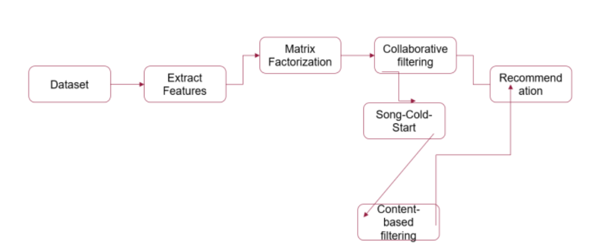
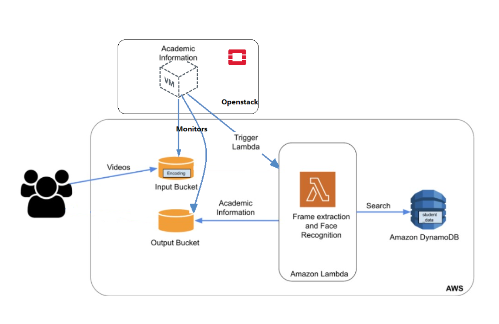

Academic Projects
Future-Task-Consideration-to-Mitigate-Side-Effects-in-RL
AI Safety and Assessment (Spring 2024)
Implemented an approach to mitigating negative side effects such as irreversible tasks of an autonomous agent by integrating auxiliary reward for future tasks on a Q-learning approach in a grid-world environment of an agent, a movable box and future goal states in both stochastic and deterministic settings. Simulations were run for 100 episodes and the number of times the box was broken was compared in each case. (Spring 2024)
Investigating and Optimizing Fairness of Probabilistic Models
Probabilistic Reasoning (Spring 2023)
Examined various probabilistic graphical models, including Naive Bayes Classifiers, Bayesian Networks and Probabilistic Circuits to assess their effectiveness in structure learning. The evaluation was based on a standardized metric called Discriminant score, which quantifies fairness. Discrimination patterns were analyzed by varying sensitive attributes, both present and absent and the results were then compared. The results emphasized the critical role of bias mitigation in predictive analytics to ensure fair decision-making.
Music Recommendation System Using Collaborative and Content-Based Filtering
Data Mining (Fall 2022)
Developed a personalized music recommender system addressing the cold start and song relevance problems using collaborative and content-based filtering.
Evaluated model performance with RMSE for collaborative filtering and user engagement metrics like Click Through Rate (CTR) for content-based filtering.
Analyzed and benchmarked the system against industry-standard recommenders like Netflix to assess effectiveness and improvement areas
Iaas, Paas and Hybrid Cloud Implementation using AWS and Openstack
Cloud Computing (Spring 2023)
Designed and implemented a resilient cloud-based image recognition system using AWS services (EC2, S3, CloudWatch) with auto-scaling capabilities, optimizing resource utilization and ensuring high availability.
Developed a serverless smart classroom assistant leveraging AWS Lambda and facial recognition technology, automating scalability and reducing infrastructure costs using the Platform as a Service (PaaS) model.
Architected a Hybrid Cloud solution integrating AWS Lambda with OpenStack VMs, enabling dynamic scal- ing across multi-cloud environments while optimizing cost and resource efficiency for elastic cloud applications.
Certifications
National Talent Search Exam NTS Scholarship - (top 1000 in the country), August 2012